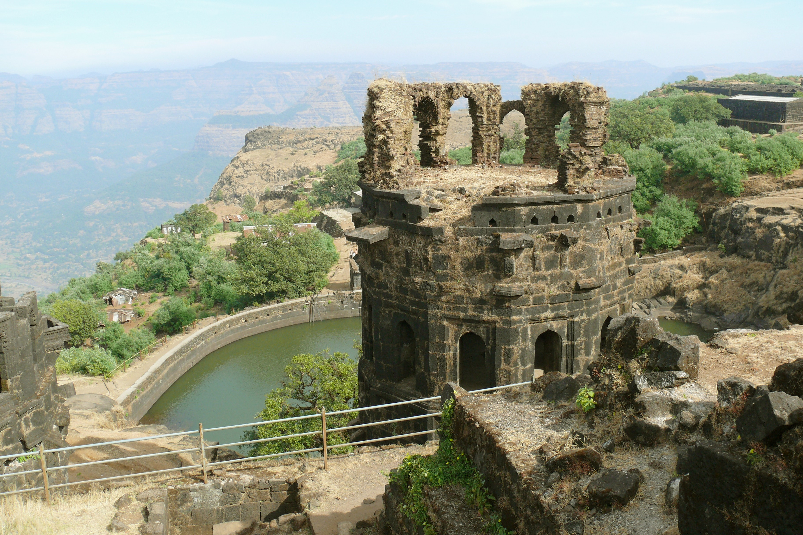
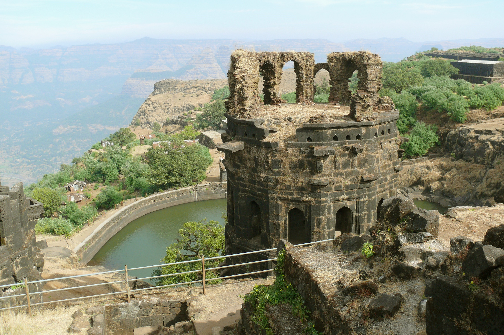
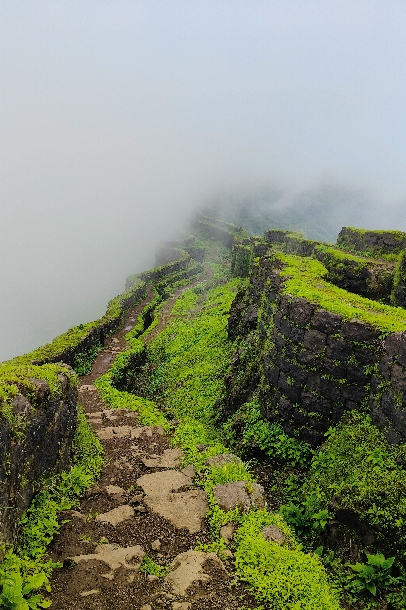
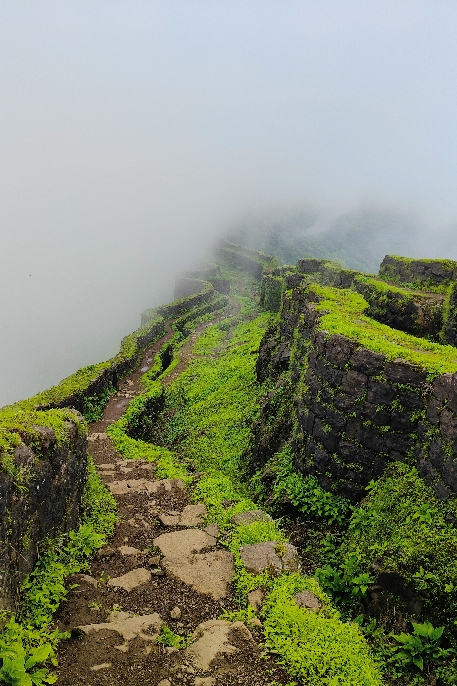

२९०० फूट उंचीचा रायगड किल्ला गिरीदुर्ग प्रकारातील आहे. रायगड जिल्ह्यातील पुणे डोंगररांगेतील रायगड किल्ला ट्रेकर्स च्या दृष्टीने सोपा समजला जातो. हिंदवी स्वराज्याच्या इतिहासात रायगडाचे स्थान सर्वश्रेष्ठ आहे. महाडच्या उत्तरेस २५ कि.मी. वर हा किल्ला असून याची समुदसपाटी पासूनची उंची २८५१ फूट आहे. रायगड हा चहुबाजूंनी डोंगररांगांनी वेढलेला आहे. याच्या उत्तरेला आणि पूर्वेला काळ नदीचे खोरे पसरलेले आहे. ...तर पश्चिमेला गांधारी नदी वाहते. याच्या पूर्वेला लिंगाणा, आग्नेयाला आकाश स्वच्छ असेल तर राजगड, तोरणा; दक्षिणेकडे मकरंदगड, प्रतापगड, वासोटा; उत्तरेला कोकणदिवा असा मुलूख दिसतो. रायगडपासून मुंबई, पुणे, सातारा ही शहरे सारख्याच अंतरावर आहेत. सह्याद्रीतील किल्ल्यांच्या रांगांतील हा एक दुवा आहे. रायगड हा निसर्गतःच डोंगरांनी वेढलेला असल्यामुळे (तसेच) शत्रूच्या हल्ल्यापासून बचाव व्हावा यासाठी पुणे सोडून पश्चिम डोंगरात रायगड ही राजधानी महाराजांनी निवडली.
रायगडाचे प्राचीन नाव ‘रायरी’ हे होते. युरोपचे लोक त्यास ‘पूर्वेकडील जिब्राल्टर’ असे म्हणत असत. जिब्राल्टरचे ठाणे जितके अजिंक्य तितकाच रायगड अजिंक्य, दुर्गम. पाचशे वर्षांपूर्वी जेव्हा त्यास गडाचे स्वरूप नव्हते व तो नुसता एक डोंगर होता, तेव्हा त्यास रासिवटा’ व ‘तणस’ अशी दोन नावे होती. त्याचा आकार उंची व सभोवतालच्या दऱ्या यावरून त्यास ‘नंदादीप’ असेही नाव पडले.
निजामशाहीत रायगडाचा उपयोग कैदी ठेवण्यापुरता होई. मोऱ्यांचा प्रमुख यशवंतराव मोरे जावळीहून पळून रायगडावर जाऊन राहिला तर प्रतापराव मोरे विजापूरास पळाला. महाराजांनी ६ एप्रिल १६५६ रोजी रायरीस म्हणजेच रायगडास वेढा घातला व मे महिन्यात रायरी महाराजांच्या ताब्यात आला. कल्याणचा सुभेदार मुल्ला अहमद खजिना घेऊन विजापूर कडे निघाल्याची बातमी महाराजांना समजली. त्यांनी तो खजिना लुटून रायगडावर आणला व त्या खजिन्याचा उपयोग गडाच्या बांधकामासाठी केला.
रायगडाचा माथा राजधानी बनवण्यास सोयीचा व पुरेसा आहे. शत्रूला अवघड वाटणाऱ्या प्रदेशातले ते अधिक अवघड ठिकाण आहे. सागरी दळणवळणासही हे ठिकाण जवळ आहे. म्हणून महारांजानी राजधानीसाठी या गडाची निवड केली.
रायगड - रायरी - इस्लामगड - नंदादीप - जंबुद्विप - तणस - राशिवटा - बदेनूर - रायगिरी - राजगिरी - भिवगड - रेड्डी - शिवलंका - राहीर - पूर्वेकडील जिब्राल्टर
शिवराज्याभिषेक हा रायगडाने अनुभवलेला सर्वश्रेष्ठ प्रसंग. महाराजांचा राज्याभिषेक म्हणजे, महाराष्ट्राच्याच नव्हे तर भारताच्या इतिहासातील एक लक्षणीय घटना. ता. १९ मे १६७४ रोजी राज्याभिषेकादि विधीपूर्वी महाराजांनी प्रतापगडाच्या भवानीचे दर्शन घेतले. तीन मण सोन्याचे म्हणजेच ५६ हजार किंमतीचे छत्र देवीला अर्पण केले. गडावरील राजसभेत ता.६ जून १६७४ ज्येष्ठ शुद्ध १३ शके १५९६, शनिवार या दिवशी राज्याभिषेक संपन्न झाला. ता. २४ सप्टेंबर १६७४, ललिता पंचमी अश्विन शु. ५ आनंद संवत्सर शके १५९६ या दिवशी तांत्रिक पद्धतीने राजांनी स्वतःला आणखी एक राज्याभिषेक करून घेतला. या मागचा खरा हेतू हा जास्तीत जास्त लोकांना समाधान वाटावे हा होता.
हा राज्याभिषेक निश्चलपुरी गोसावी याच्या हस्ते पार पडला. कवी भूषण रायगडाचे वर्णन करतो की, ‘शिवाजीने सर्व किल्ल्यांचा आधार व विलासस्थान अशा रायगड किल्ल्यास आपले वस्तीस्थान केले. हा किल्ला एवढा प्रचंड आणि विशाल आहे की, त्यात तीनही लोकींचे वैभव साठवले आहे. गडावर विहिरी, सरोवरे, कूप विराजत आहेत. सर्व यवनांना जिंकून रायगडावर राजा शिवाजीने राजधानी केली आणि लोकांचे इच्छित पुरवून जगतात श्रेष्ठ यश संपादन केले.’ इ.स. १६७५ फेब्रुवारी ४ शके १५९६ आनंद सवत्सर मागह व ५ गुरुवार या दिवशी संभाजी राजांची मुंज रायगडावर झाली. शके १६०१ सिद्धार्थी संवत्सर फाल्गुन व २, १६८० मार्च ७ या दिवशी राजाराम महाराजांची मुंज रायगडावर झाली.
लगेच आठ दिवसांनी राजाराम महाराजांचे लग्न प्रतापराव गुजर यांच्या मुलीशी झाले. रायगडाने अनुभवलेला अत्यंत दुःखद प्रसंग म्हणजे महाराजांचे निधन शके १६०२ रुद्रनाम संवत्सरे चैत्र शुद्ध पौर्णिमा, हनुमान जयंती, दि. ३ एप्रिल १६८० या दिवशी महाराजांचे निधन झाले. सभासद बखर म्हणते, ‘ते दिवशी पृथ्वीकंप जाहला. अष्टदिशा दिग्दाह होऊन गेल्या. श्रीशंभुमहादेवी तळ्याचे उदक रक्तांबर जाले. पुढे शके १६०२ रौद्र संवत्सर माघ शु. ७ इ.स. १६८१ १६ फेब्रुवारी या दिवशी रायगड किल्ला येथे संभाजी महाराजांचे विधिपूर्वक राज्यारोहण झाले.
उतारवयात जिजाबाईंना गडावरची थंड हवा, वारा मानवत नस, म्हणून महराजांनी त्यांच्यसाठी पाचाडजवळच एक वाडा बांधून दिला. तोच हा मासाहेबांचा राहता वाडा. वाड्याची व्यवस्था ठेवण्यासाठी काही अधिकारी तसेच शिपायांची व्यवस्थाही महाराजांनी केली होती. पायऱ्यांची एक उत्तम विहीर, तसेच राजमाता जिजाबाईंना बसण्यासाठी केलेल दगडी आसन बघण्यासारखे आहे. यास ‘तक्क्याची विहीर’ असेही म्हणतात.
या दरवाजाला ‘नाणे दरवाजा’ असेही म्हणत. या दरवाजाचा संबंध नाना फडणिसांशी लावला जातो ही पूर्णपणे गैरसमजूत आहे. नाना दरवाजा याचाच अर्थ लहान दरवाजा. इ.स. १६७४ च्या मे महिन्यात राज्याभिषेकाच्या निमित्ताने इंग्रजांचा वकील हेन्री ऑक्झेंडन याच दरवाजाने आला होता. या दरवाज्यास दोन कमानी आहेत. दरवाज्याच्या आतील बाजूस पहारेकऱ्यांसाठी दोन लहान खोल्या आहेत. त्यांस ‘देवड्या’ म्हणतात. दरवाजास अडसर घालण्यासाठीइ खोबणी दिसतात.
चित दरवाज्याने गेल्यावर नागमोडी वळणे घेत गेलेल्या रस्त्याने पुढे गेल्यावर एक सपाटी लागते. या मोकळ्या जागेत टोकाशी दोन पडक्या इमारती दिसतात. त्यापैकी एक पहारेकऱ्यांची जागा असून दुसरे धान्याचे कोठार आहे. येथे मदनशहा नावाच्या साधूचे थडगे आहे. येथे एक प्रचंड तोफही दिसते. येथून पुढे गेल्यावर खडकात खोदलेल्या तीन गुहा दिसतात.
महादरवाजाच्या बाहेरील अम्गास वर दोन्ही बाजूस दोन सुंदर कमळाकृती कोरल्या आहेत. दरवाज्यावर असणाऱ्या या दोन कमळांचा अर्थ म्हणजे किल्ल्याच्या आत ‘श्री आणि सरस्वती’ नांदत आहे. ‘श्री आणि सरस्वती’ म्हणजेच ‘विद्या व लक्ष्मी’ होय. महादरवाज्याला दोन भव्य बुरूज असून एक ७५ फूट तर दुसरा ६५ फूट उंच आहे. तटबंदीमध्ये जी उतरती भोके ठेवलेली असतात त्यास ‘जंग्या’ म्हणतात. शत्रूवर मारा करण्यासाठी ही भोके ठेवलेली असतात. बुरुजांमधील दरवाजा हा वायव्य दिशेस तोंड करून उभा आहे. महादरवाज्यातून आत आल्यावर पहारेकऱ्यांच्या देवड्या दिसतात तसेच सरंक्षकासाठी केलेल्या राहण्याच्या खोल्या दिसतात. महादरवाज्यापासून उजवीकडे टकमक टोकापर्यंत तर डावीकडे हिरकणी टोकापर्यंत तटबंदी बांधलेली आहे.
उतारवयात जिजाबाईंना गडावरची थंड हवा, वारा मानवत नसत म्हणून महाराजांनी त्यांच्यसाठी पाचाडजवळच एक वाडा बांधून दिला. तोच हा मासाहेबांचा राहता वाडा. वाड्याची व्यवस्था ठेवण्यासाठी काही अधिकारी तसेच शिपायांची व्यवस्थाही महाराजांनी केली होती. पायऱ्यांची एक उत्तम विहीर, तसेच जिजाबाईंना बसण्यासाठी केलेल दगडी आसन बघण्यासारखे आहे. यास ‘तक्क्याची विहीर’ असेही म्हणतात.
महादरवाज्यापासून उजवीकडे टकमक टोकापर्यंत जी तटबंदी जाते, त्यावरून चालत गेल्यास जिथे ही तटबंदी संपते,त्याच्या थोडे अलीकडे बुरुजात ही चोरदिंडी बांधलेली आहे. बुरुजाला आतून दरवाजापर्यंत येण्यासाठी पायऱ्या आहेत.
महादरवाज्यातून थोडे पुढे आल्यावर जो तलाव दिसतो तो हत्ती तलाव. गजशाळेतून येणाऱ्या हत्तीच्या स्नानासाठी आनि पिण्यासाठी या तलावाचा उपयोग होत होता.
हत्तीतलावापासून जवळच रायगड जिल्हा परिषदेच्या धर्मशाळेच्या इमारती दिसतात. धर्मशाळेपासून दक्षिणेकडे अंदाजे ५०-६० पावले चालत गेल्यास जो तलाव लागतो तो गंगासागर तलाव. महाराज्यांच्या राज्याभिषेकानंतर सप्तसागर व महानद्यांची आणलेली तीर्थे याच तलावात टाकली गेली. म्हणूनच याचे गंगासागर असे नाव पडले. शिवकाळात शिबंदीसाठी याचे पाणी वापरण्यात येई.
गंगासागराच्या दक्षिणेस दोन उंच मनोरे दिसतात. त्यासच स्तंभ म्हणतात. जगदीश्वराच्या शिलालेखामध्ये ज्या स्तंभाचा उल्लेख केला आहे. ते हेच असावेत. ते पूर्वी पाच मजले होते असे म्हणतात. ते द्वादश कोनी असून बांधकामात नक्षीकाम आढळते.
स्तंभांच्या पश्चिमेस भिंत असलेल्या भागातून ३१ पायऱ्या बांधलेल्या दिसतात. त्या चढून गेल्यावर जो दरवाजा लागतो तो पालखी दरवाजा. या दरवाज्यातून आपल्या बालेकिल्ल्यात प्रवेश करता येतो.
पालखी दरवाज्याने वर प्रवेश केला की, चढ-उतार असलेला एक सरळ मार्ग आपल्याला मेणा दरवाजापर्यंत घेऊन जातो. उजव्या हातास जे सात अवशेष दिसतात ते आहेत राण्यांचे महाल. मेणा दरवाज्यातून बालेकिल्ल्यावर प्रवेश करता येतो.
राणीवशाच्या समोर डाव्या हातास दासदासींच्या मकानांचे अवशेष दिसतात. या अवशेषांच्या मागे दुसरी जी समांतर भिंत आहे त्या भिंतीच्या मध्यभागी जो दरवाजा आहे तेथून बालेकिल्ल्याच्या अंतर्भागात प्रवेश केला की जो प्रशस्त चौथरा लागतो तेच हे महाराजांचे राजभवन. राजभवनाचा चौथारा ८६ फूट लांब ३३ फूट रुंद आहे.
राजप्रासादाजवळील स्तंभांच्या पूर्वेकडे असलेल्या मोकळ्या जागेत एक तळघर आहे, तीच ही रत्नशाळा. हा खलबनखाना म्हणजेच गुप्त बोलणी करण्यासाठी केलेली खोली असावी असेही म्हणतात.
महाराजांचा राज्याभिषेक जेथे झाला, तीच ही राजसभा. राजसभा २२० फूट लांबव १२४ फूट रुंद आहे. येथेच पूर्वेकडे तोंड केलेली सिंहासनाची जागा आहे. येथे बत्तीस मणांचे सोन्याचे सिंहासन होते. सभासद बखर म्हणते, ‘तख्त सुवर्णाचे बत्तीस मणांचे सिद्ध करवले. नवरत्ने अमोलिक जितकी कोशात होती. त्यामध्ये शोध करून मोठी मोलाची रत्ने जडाव केली.’
सिंहासनाच्या समोर जे भव्य प्रवेशद्वार दिसते तोच हा नगारखाना. हे बालेकिल्ल्याचे मुख्य प्रवेशद्वार आहे. नगारखान्यातून पायऱ्या चढून वर गेले की आपण किल्ल्यावरील सर्वाधिक उंचीवर असतो.
नगारखान्याकडून आपण डावीकडे उतरून आलो की, समोर जी मोकळी जागा दिसते तो ‘होळीचा माळ’. तेथेच आता शिवछत्रपतींचा भव्य पुतळा बसवलेला आहे. पुतळ्यासमोर जे दोन रांगांमध्ये भव्य अवशेष दिसतात तीच शिवकाळातील बाजारपेठ. पेठेच्या दोन रांगात प्रत्येकी २२ दुकाने आहेत. मधून जवळजवळ चाळीस फुट रुंद रस्ता आहे.
महाराजांच्या पुतळ्याच्या डाव्या बाजूस जे छोटे देऊळ दिसते ते शिर्काईचे देउळ. शिर्काई ही गडावरील मुख्य देवता.
बाजारपेठेच्या खालच्या बाजूस पूर्वेकडील उतारावर ब्राह्मणवस्ती, ब्राह्मणतळे वगैरे अवशेष दिसतात. तेथूनच समोर जे भव्य मंदिर दिसते तेच महादेवाचे म्हणजे जगदीश्वराचे मंदिर. मंदिरासमोर नंदीची भव्य आणि सुबक मूर्ती आहे. पण सध्या ही मूर्ती भग्नावस्थेत आहे. मंदिरात प्रवेश केला की भव्य सभामंडप लागतो. मंडपाच्या मध्यभागी भव्य कासव आहे. गाभाऱ्याच्या भिंतीस हनुमंताची भव्य मूर्ती दिसते. मंदिराच्या प्रवेशद्वाराच्या पायऱ्यांच्या खाली एक लहानसा शिलालेख दिसतो. तो पुढीलप्रमाणे, ‘सेवेचे ठायी तत्पर हिरोजी इटळकर’ या दरवाजाच्या उजव्या बाजूस भिंतीवर एक सुंदर शिलालेख दिसतो तो पुढीलप्रमाणे:
रायगड किल्ला येथील मंदिराच्या पूर्वदरवाजापासून थोड्या अंतरावर जो अष्टकोनी चौथरा दिसतो तीच छत्रपती शिवाजी महाराजांची समाधी.
होळीचा माळ डाव्या हातास सोडून उजवीकडील वाट कुशवर्त तलावाकडे जाते. तलावाजवळ महादेवाचे छोटेसे देऊळ दिसते. देवळासमोर फुटलेल्या अवस्थेत नंदी दिसतो.
कुशावर्त तलावाजवळून घळीने उतरत वाघ दरवाजाकडे जाता येते. आज्ञापत्रात लिहिले आहे की, ‘किल्ल्यास एक दरवाजा थोर आयब आहे, यांकरिता गड पाहून एक दोन - तीन दरवाजे, तशाच चोरदिंड्या करून ठेवाव्या. त्यामध्ये हमेशा राबत्यास पाहिजे तितक्या ठेवून वरकड दरवाजे व दिंड्या चिणून टाकाव्या.’ हे दूरदर्शीपणाचे धोरण ठेऊनच महाराजांनी महादरवाजाशिवाय हा दरवाजा बांधून घेतला. या दरवाज्याने वर येणे जवळजवळ अशक्यच असते तरी दोर लावून खाली उतरू शकतो. पुढे राजाराम महाराज व त्यांची मंडळी झुल्फिरखानचा वेढा फोडून याच दरवाज्याने निसटली होती.
बाजार पेठेच्या समोरील टेपावरून खाली उतरून टकमक टोकाकडे जाता येते. तेथेच एका दारूच्या कोठाराचे अवशेष दिसतात. जसजसे आपण टोकाकडे जातो तसतसा रस्ता निमुळता होत जातो. उजव्या हाताला सरळ तुटलेला २६०० फूट खोल कडा आहे. टोकावर वारा प्रचंड असतो व जागाही कमी असल्यामुळे गोंधळ न करता सावधानता बाळगावी.
गंगासागराच्या उजवीकडे पश्चिमेस जी चिंचोळी वाट जाते ती हिरकणी टोकाकडे जाते. हिरकणी टोकाशी संबंधित हिरकणी गवळणीची एक कथा सांगितली जाते. या बुरुजावर काही तोफाही ठेवलेल्या दिसतात. बुरुजावर उभे राहिले तर डाव्या हाताला गांधारीचे खोरे, उजव्या बाजूला काळ नदीचे खोरे दिसते. तसेच इथून पाचाड खुबलढा बुरुज, मशीद मोर्चा ही ठिकाणे तोफेच्या माऱ्यात आहेत. त्यामुळे युद्धशास्त्राच्या तसेच लढाऊ दृष्टीने ही खूप महत्त्वाची आणि मोक्याची जागा आहे.


 



 
